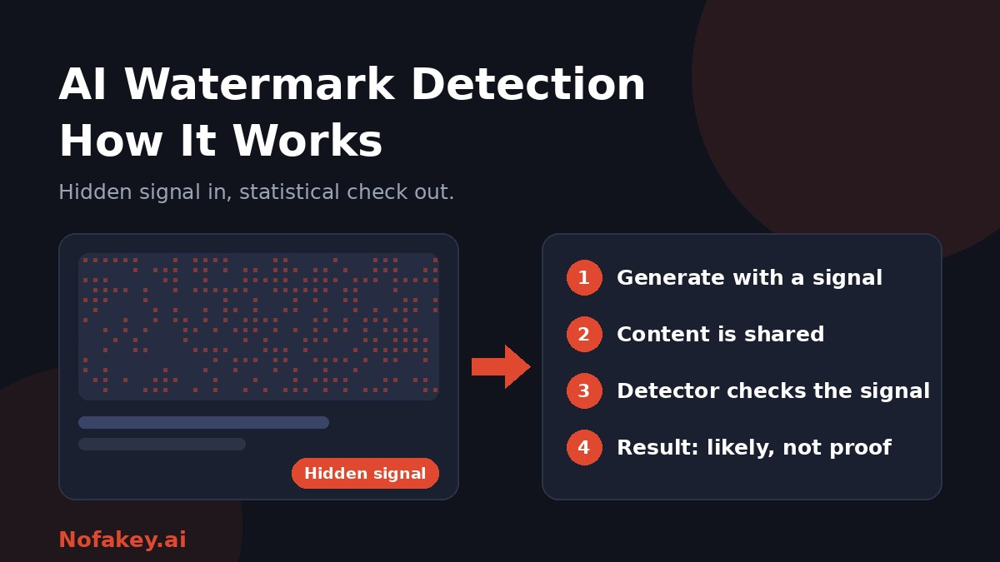

You may have heard that AI companies "watermark" what their tools make. That sounds like a stamp that proves something is AI. In practice it is subtler, and it has real limits. This guide explains how AI watermark detection works, what it can and cannot tell you, and what to do when no watermark is present.
What is an AI watermark?
An AI watermark is a signal built into AI-generated content so that it can be identified later. Most are invisible to people. They differ from the visible logo or text stamp you might see on a stock photo, which anyone can crop out.
Three different things are often called "AI watermarks," and they are easy to confuse:
- Visible labels: a logo, badge or caption saying the content is AI-made.
- Invisible watermarks: a signal woven into the pixels, sound or word choices themselves.
- Provenance metadata: information stored in or attached to a file that records how it was made, sometimes called content credentials.
How AI watermark detection works
The process has two stages: embedding, then detection.
- Embedding. When the AI generates content, it also writes in a hidden pattern, either as the content is created or added afterwards.
- Sharing. The content travels. It may be edited, compressed, screenshotted or reposted.
- Detection. A detector scans the content for the expected pattern, often using a secret key held by the developer.
- Result. The detector reports a confidence level. Good systems can say "present," "absent" or "inconclusive."
Detection works only for watermarks that the detector knows how to read. A detector built for one system generally cannot read another system's watermark.
How it works for text, images, audio and video
| Format | Typical approach | Main weakness |
|---|---|---|
| Text | The model nudges which words it picks among equally good options. Detection runs statistical tests for that pattern. | Short passages, heavily constrained text such as code or facts, and thorough rewrites weaken it |
| Images | A faint pattern is spread across pixels, readable by a matching tool even if the image looks unchanged. | Heavy editing, cropping, resizing and compression can degrade it |
| Audio | An inaudible signal is mixed into the sound. | Re-recording, noise and format changes can hide it |
| Video | Signals in frames, sound or both. | Re-encoding, trimming and screen recording |
The text case, in plain words
When a language model writes, it often has several nearly equal word choices. A text watermark steers those choices in a pattern that looks natural to a reader but is detectable by someone holding the key. Nothing visible is added. Confidence grows with length, which is why a long article is easier to assess than one sentence.
What detection can and cannot tell you
- It is probabilistic. A positive result is a strong clue, not courtroom proof.
- It says "AI was involved," not "AI wrote everything." It usually cannot show how much of the work came from AI.
- Absence proves nothing. Many tools do not watermark at all, and a watermark can be removed.
- It is system-specific. You can usually check only content from tools that offer a matching detector.
- Editing matters. Light editing may survive. A full rewrite, re-recording or heavy image edit may not.
- False results can happen. Treat any single result as one input, especially if it affects someone's reputation, job or grades.
Watermarks vs. metadata vs. AI detectors
| Method | How it works | Key trade-off |
|---|---|---|
| Watermark detection | Looks for a signal the generator embedded | Harder to strip, but needs the right detector and key |
| Provenance metadata | Reads a record of how the file was made | Easy to read, but can be stripped when a file is re-saved or screenshotted |
| General AI detectors | Guess from style or visual artifacts, without any embedded signal | Work on any content, but can be wrong in both directions |
No single method is enough. Strong checks combine them with human judgment and context.
How to check content when you cannot read a watermark
- Check for a visible label or caption from the creator or platform.
- Look at the source. Who posted it first, and can you find the original?
- Search for the claim or image elsewhere to see whether reliable outlets report the same thing.
- Use a matching detector if the tool that made the content offers one.
- Treat urgent or emotional content with extra care. Pause and verify before sharing or acting.
- Do not rely on one tool. Combine several signals before drawing a conclusion.
What this means if you create content
- Do not count on watermarks as your disclosure. People cannot see them, so add a visible label too. See our guide on how to label AI-generated content.
- Keep your own records of which tools you used, so you can answer questions.
- Do not try to strip watermarks to hide AI use. Honest labeling protects your credibility.
- Be careful accusing others. A detector result alone should not decide that someone cheated or lied.
Why watermarks do not stop scams
Scammers do not use tools that watermark honestly, and they can re-record or rework content to remove signals. Do not assume a clip is real because you cannot find a watermark. Verify the person or request instead. Read our guide on what a deepfake is and how to protect yourself, and the fake AI agent payment scam.
Conclusion
AI watermark detection is useful but limited. It works best when a detector matches the generator and the content is long and unedited. It struggles with short, edited or reworked material. Use it as one clue, label your own AI content visibly, and verify high-stakes content through its source. Unsure about a message or claim? Paste it into our free checker, and find more guides on the Nofakey.ai blog.
Frequently asked questions
What is an AI watermark?
An AI watermark is a hidden signal added to AI-generated content, usually invisible to people, that a matching detector can later look for to check whether AI was involved.
How does AI watermark detection work?
A detector scans the content for the specific pattern the generator embedded, often using a secret key and statistical tests, then reports whether the watermark is present, absent or inconclusive.
Can AI watermarks be removed?
Often they can be weakened or destroyed by heavy editing, rewriting, cropping, compression or re-recording. No watermark is guaranteed to survive.
Does no watermark mean content is human-made?
No. Many AI tools do not add watermarks, and a watermark can be removed, so absence of a watermark proves nothing.
Can I check any content for an AI watermark myself?
Only if the tool that made it offers a matching detector. A detector generally cannot read watermarks from other systems.
Not sure whether something is real or AI-made?
Run it through the checker